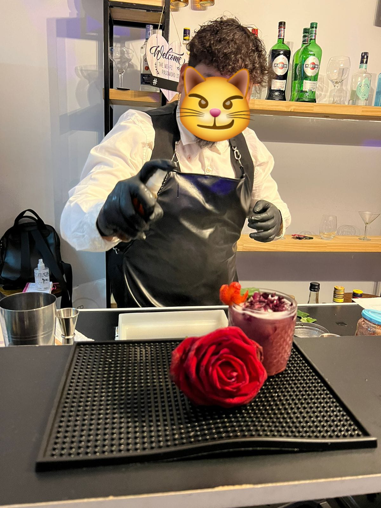

Galería


Soy un gordo que hace tragos. Creador de la Llamarada Homero. Abrazo
Ofrezco un servicio de coctelería profesional para todo tipo de eventos, desde elegantes bodas y divertidas fiestas de 15 años hasta celebraciones corporativas y reuniones privadas. Con una barra móvil completamente equipada, me especializo en la creación de cócteles personalizados que se adaptan al estilo y temática de cada evento, asegurando que cada bebida sea una experiencia única. Ya sea un brindis inolvidable en una boda o cócteles creativos para sorprender a tus invitados, mi objetivo es elevar la atmósfera de tu celebración con calidad y sabor excepcionales.